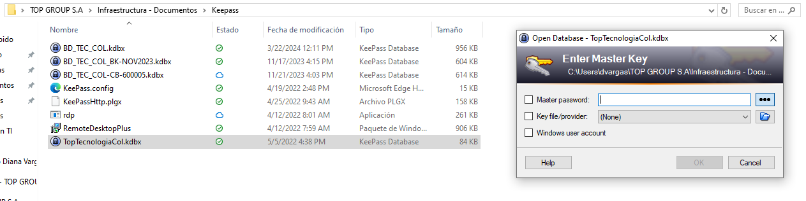

KEEPASS: Dentro de Keepass vas a encontrar el acceso a todo los lugares requeridos por el equipo, entra en infraestructura - Documentos/Keepass. Selecciona BD_TEC_COL.kdbx e ingresa con la contraseña P4$$w0rdT0P

Este espacio contienen netamente información a cerca de área de Infraestructura. Manuales para los integrantes del equipo y paso a paso de los procesos que son manejados
KEEPASS: Dentro de Keepass vas a encontrar el acceso a todo los lugares requeridos por el equipo, entra en infraestructura - Documentos/Keepass. Selecciona BD_TEC_COL.kdbx e ingresa con la contraseña P4$$w0rdT0P
ZABBIX: Haciendo click AQUÍ vas a acceder al tablero de Zabbix, inicia sesión con tus credenciales una vez ya autorizado. Verás las alertas.
KOWL: Haciendo click AQUÍ vas a poder visualizar los conectores.
SHAREPOINT: Haciendo click AQUÍ encontrarás la carpeta de SharePoint de Infraestructura, solicita el permiso para poder entrar y fijala en tu computadora (con OneDrive).
LUDICHART: Accede haciendo click AQUÍ. Las credenciales son: alonsoporras28@gmail.com y la contraseña B4nd4t3c4!/2023
Este video te explicará como acceder al Directorio Activo donde podrás (bla bla bla):
Por medio de ServiceDesk nos encargamos de reicibir y dar solución a los problemas técnicos o solicitudes por parte de nuestra compañía. Haciedo click AQUÍ tendrás acceso a ServiceDesk, ingresas con tus credenciales de red.
Haciedo click AQUÍ tendrás acceso a ServiceDesk, ingresas con tus credenciales de red.
El alistamiento de equipos se realiza cuando nos llega un equipo nuevo o cuando se completó algún cambio de equipo. Es recomendable formatear el equipo cada vez que sea usado, con el fin de eviatar errores en el sistema.
1. Sebe debe realizar la instalación de Windows desde la USB que se encuentra en la oficina. Configurar la instalación común y corriente.
2. Se debe crear el usuario tgpadmin cuya contraseña debe ser topgroup.00, para las preguntas de seguridad todas las respuestas deben ser topgroup
3. Una vez tengamos el equipo listo, debemos subir el dispositivo al dominio de TopGroup de la siguiente manera:
4. Se debe hacer la instalación de las aplicaciones básicas dependiendo del cargo de la persona:
| Cargo cualquiera | Cargo Técnico |
| Microsoft Office | Microsoft Office |
| VPN Forticlient | VPN Forticlient |
| 7-Zip | 7-Zip |
| Adobe Reader | Adobe Reader |
| Navegadores | Navegadores |
| Softphone 3CX | Softphone 3CX |
| Microsoft Teams | Microsoft Teams |
| Anydesk | Anydesk |
| SW Pausas | SW Pausas |
| OCS Inventory | OCS Inventory |
| Notepad ++ | Notepad ++ |
| Putty | |
| WinSCP | |
| FileZilla |
5. Si es un usuario nuevo, este se debe crear desde el Directorio Activo, de lo contrario solo se debe ingresar las credenciales del usuario ya existente.